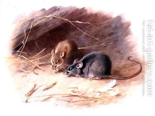

Pesachim 45 - Dough in the cracks of a kneading trough
It is normal to have some dough stuck in the cracks of a kneading trough. If the amount of this dough is more than an olive volume, then one must dispose of it for Passover. However, if it is less than an olive, then it is considered nullified due to its small size, and one can keep it there.
There are qualifications to this rule though: it is only applicable to the upper part of the trough, which does not hold water. The bottom part of the trough, where kneading takes place and where water enters, needs to be strong, so there even larger pieces of dough are used to strengthen the trough, and therefore they don’t have to be removed.
The same rule applies in regards to ritual impurity: if one cares that the dough is there, it stops impurity. This statement, however, is not easy to understand: if anything, it is not the same. Before all depended on the size of the dough piece, and now it depends on one caring about the dough being there. The Talmud tries to give it a few interpretations, and ends up understanding it as thus. If the dough is important in his eyes, such as on Passover when it is prohibited, then it serves as a separation between the possible source of impurity (such as a dead rat) and the trough. On the other days of the year, it depends upon his caring about it: if he objects to the dough being there, then it is not part of the trough. Therefore, it separates the trough impurity. If he does not mind the dough being there, then it becomes as if part of the trough, and if a dead rat touches this dough, the whole trough becomes impure.
Art: Alexandrine Rat and Black Rat by Archibald Thorburn